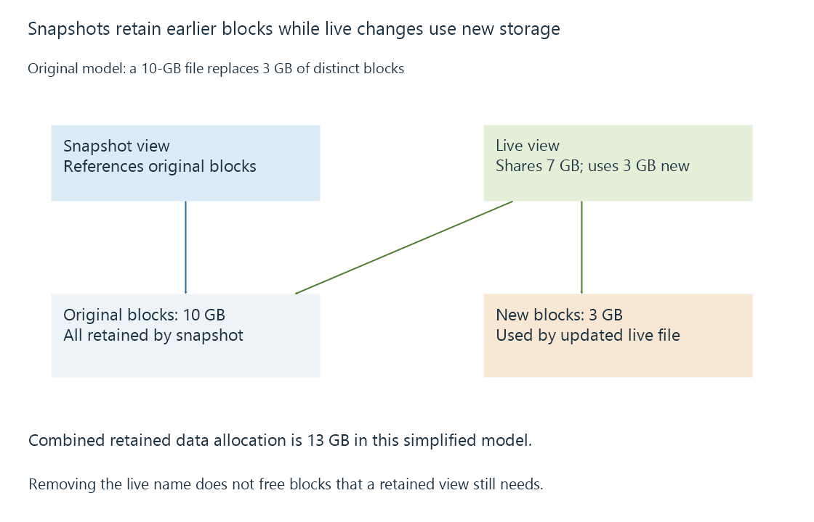

File-system snapshots and retained versions
A file-system snapshot preserves a point-in-time view within its storage system, often by retaining old blocks that later writes would otherwise replace.
A file-system snapshot preserves a view of a filesystem or dataset at a particular point. In copy-on-write systems, later changes can use new blocks while the snapshot keeps references to the earlier ones.
This can make a snapshot quick to create without immediately copying every movie into another complete directory tree. It also means its space consumption develops as the live data change.
Old blocks remain reachable
An original sequence begins with a 10-GB file. A snapshot refers to its current blocks. The live version then replaces three GB of distinct blocks.
Original data blocks: 10 GB
New replacement blocks: 3 GB
Blocks needed by live view plus retained snapshot: 13 GB
The model excludes metadata, compression, shared references and further snapshots. Its point is that changed old blocks stay allocated while the snapshot still needs them.

Deleting the live filename may therefore release little or no physical space while snapshots retain its blocks. Removing one snapshot does not universally free everything it references if other views still reference the same blocks.
A filesystem point is not every application's completed operation
A snapshot can present a structurally consistent storage view without representing a clean application shutdown. A database may need its journal or WAL to recover. Several files updated separately may have been captured between related changes.
| Captured state | Question still needed |
|---|---|
| One dataset's snapshot | Were all application files in that dataset? |
| Filesystem-consistent point | Can the application recover that state? |
| Separate snapshots of several volumes | Do they represent a coordinated point? |
| Snapshot of database and journals | Does the supported restore process accept that complete set? |
For Emby application data, use the documented backup method and its consistency requirements. Do not replace those requirements with the assumption that every filesystem snapshot equals an application-aware backup.
Retained history still has a failure domain
A snapshot on the same pool can help undo an unwanted change while that pool remains available. Failure of the pool, loss of the host or removal of all snapshots can remove that history.
A copy or replication to another destination can extend protection, but its independence and retained generations need their own explanation. The snapshot is the preserved source view; the recovery copy is another storage relationship.
For a media library, snapshots can provide convenient earlier filenames and versions. Their retention and space use should be understood together so preserving history does not unexpectedly exhaust capacity for new media or recordings.
See Also
- Media backups and recoverable generations
- Application-data backups and consistent server state
- Database transactions and atomic application changes